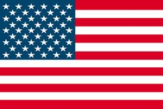
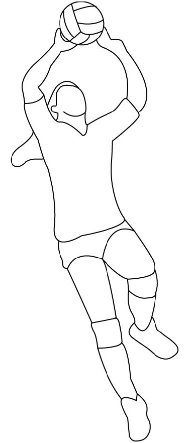
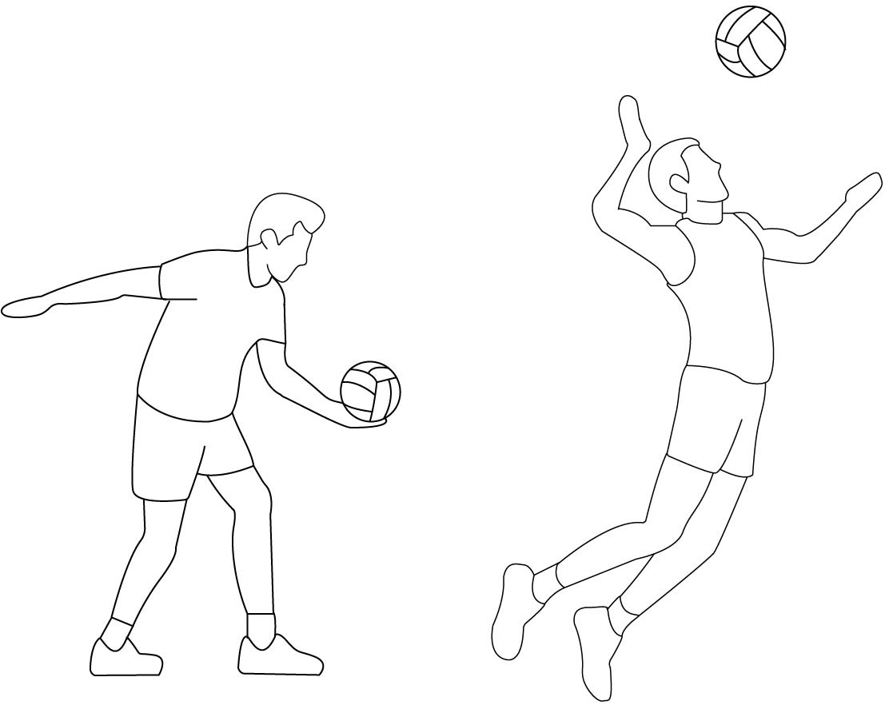
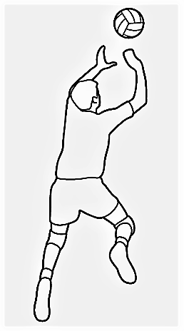
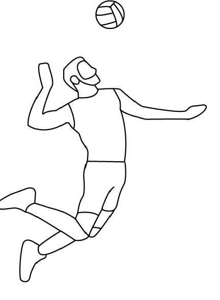
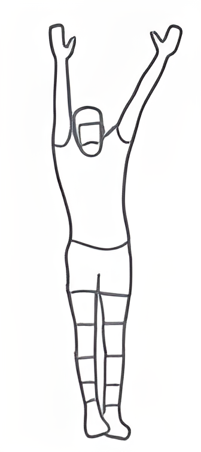
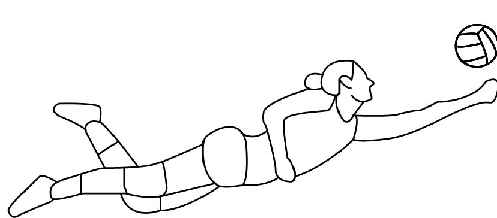

Languages:

English
The "pass" foundation basically involves two specific techniques:
It involves the player pushing the ball with the inside of the arms straight, usually with the legs bent and below the waist line;
In which the ball is manipulated with the fingertips above the head.

The serve in volleyball is the act of sending the ball from the service area to the opponent's court.
This action is performed by the player who occupies position 1, striking the ball loose in the air with the hand or part of the arm. The ball must be directed towards the opponent's court and pass over the net and between the antennas.
If a service point is made, without the opposing defense being able to make the reception, it is called an ace.
It's the least powerful serve. The player must hold the ball with one hand and hit it with the other, open or closed, making an upward movement.
It is the most used serve and in which the ball is thrown with force. In this type of service, the player must throw the ball upwards, with one hand, and hit it with the other.
It's the most powerful serve. The player throws the ball upwards and, jumping, hits it as if he were going to make a cut, that is, in a movement from top to bottom.

Normally it is the second hit of the three hits allowed for each team. The most used technique is the touch, however, the lifting can also be performed in a headline.
The purpose of the lift is to lift the ball for a teammate to make an attack.

Most of the time it is the third touch of the ball allowed to each team. The most used technique is the cut. Usually the attack is made by jumping and hitting the ball with the palm of the hand using the greatest possible force. The purpose of this foundation is to make the ball land on the opposing court, thus winning the point in dispute. To carry out the attack, the player takes a series of counted steps ("pass"), jumps and then projects his body forward, thus transferring his weight to the ball at the moment of contact.

It refers to the actions performed by the players who occupy the front part of the court (positions 2-3-4) and whose objective is to prevent or hinder the attack of the opposing team. It consists of extending the arms above the level of the net with the purpose of intercepting the trajectory or decreasing the speed of a ball that has been cut by the opponent. According to the number of players, the block can be classified as single, double, or triple. Blocking the opponent's serve is prohibited.

Consists of a set of techniques that aim to prevent the ball from touching the court after the opponent's attack. In addition to the touch and the headline, the defense can be performed with any part of the body, including the feet. In volleyball there is a specialist in defense, the libero.